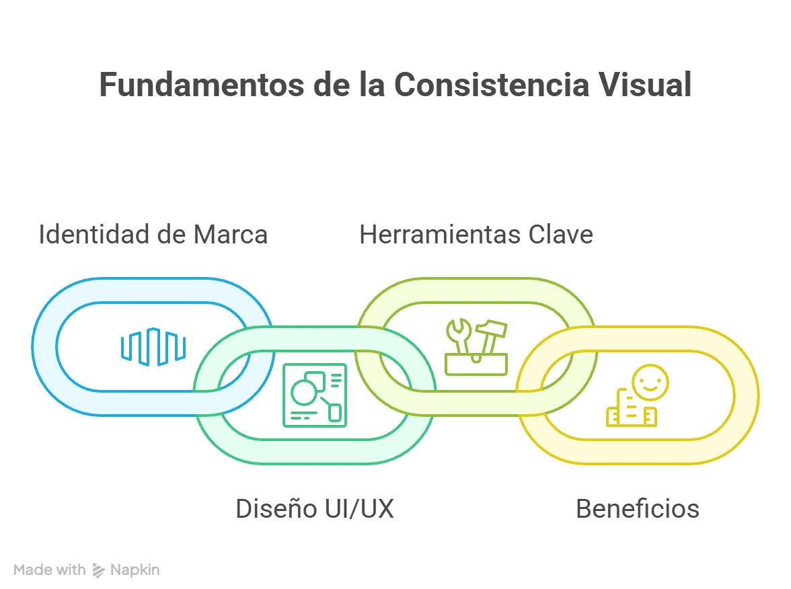
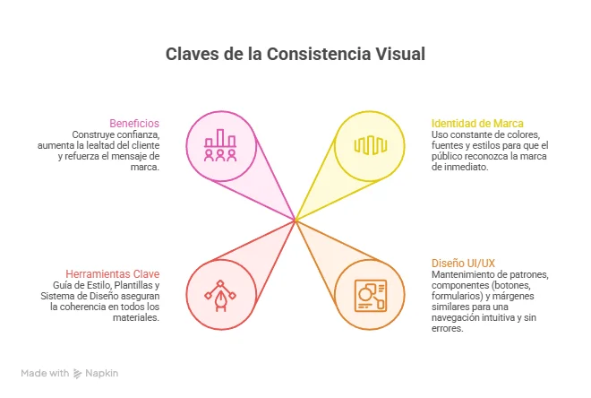
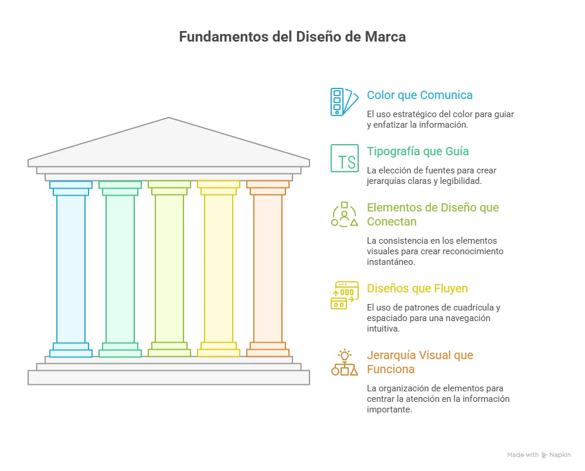
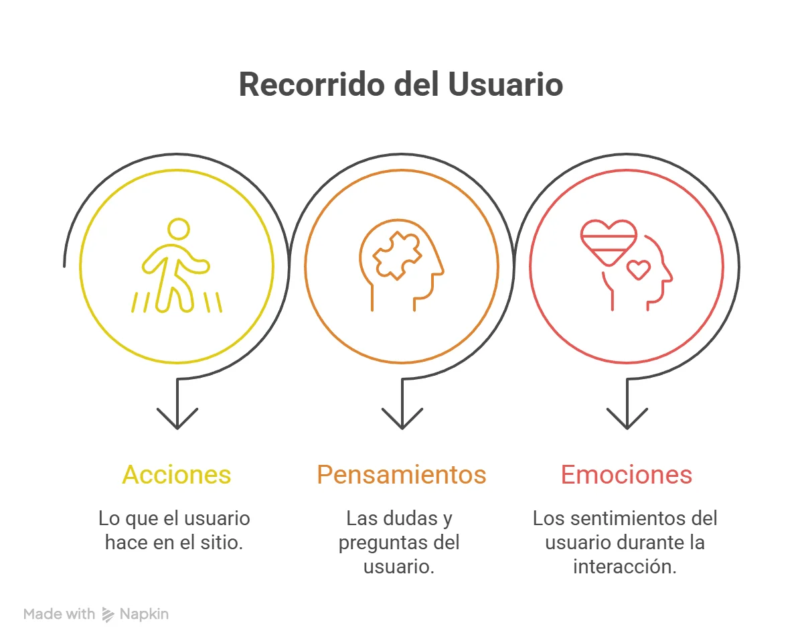
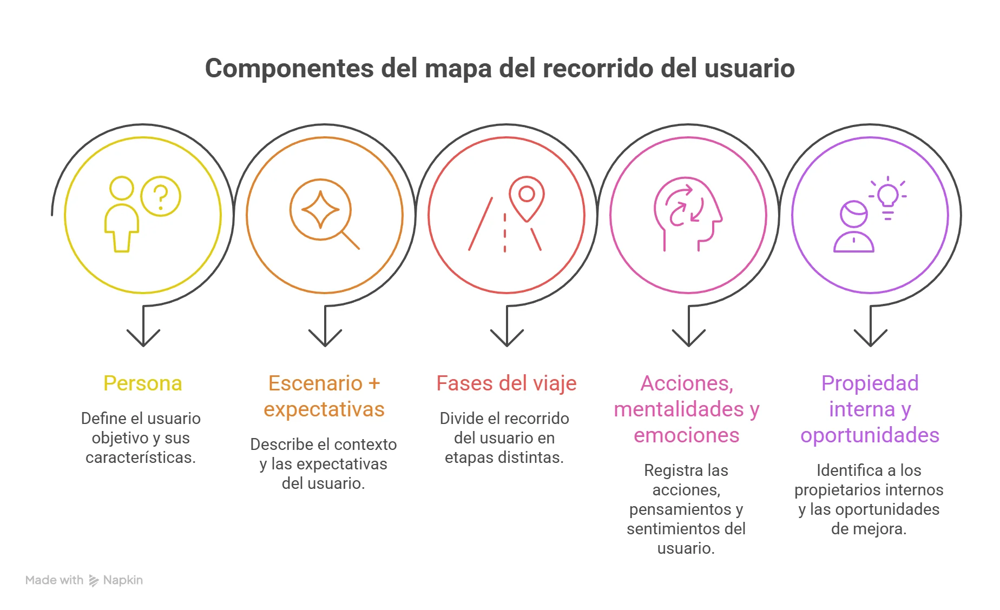
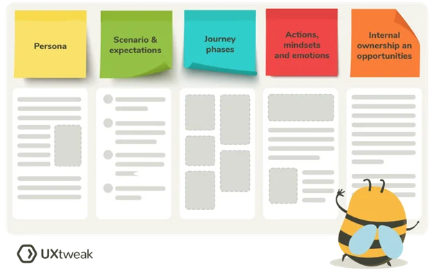
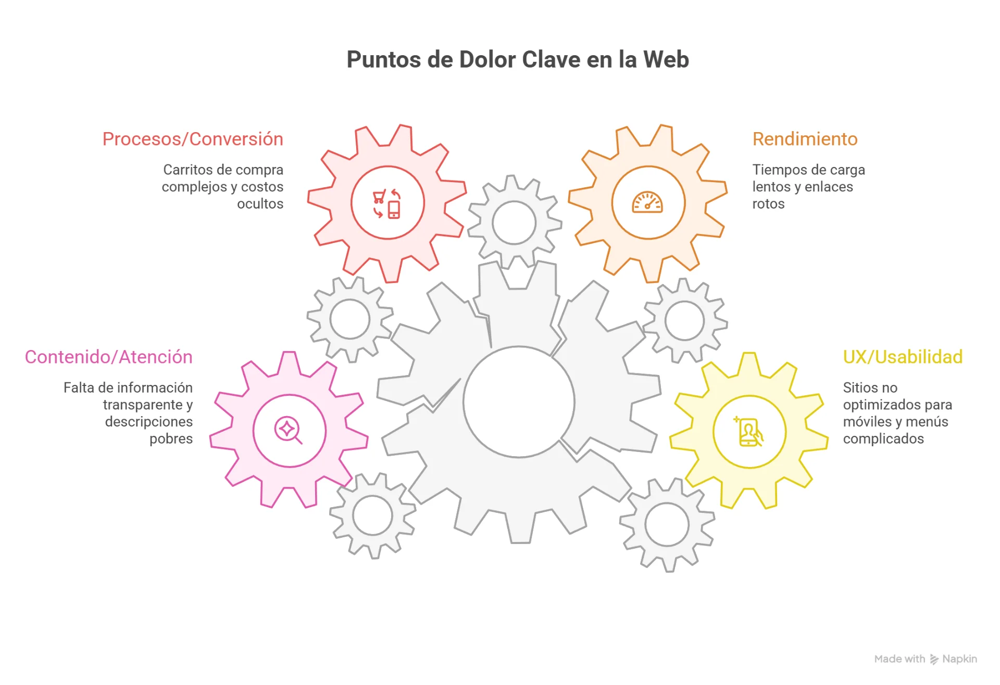
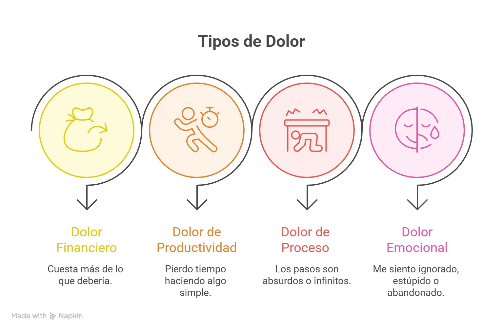
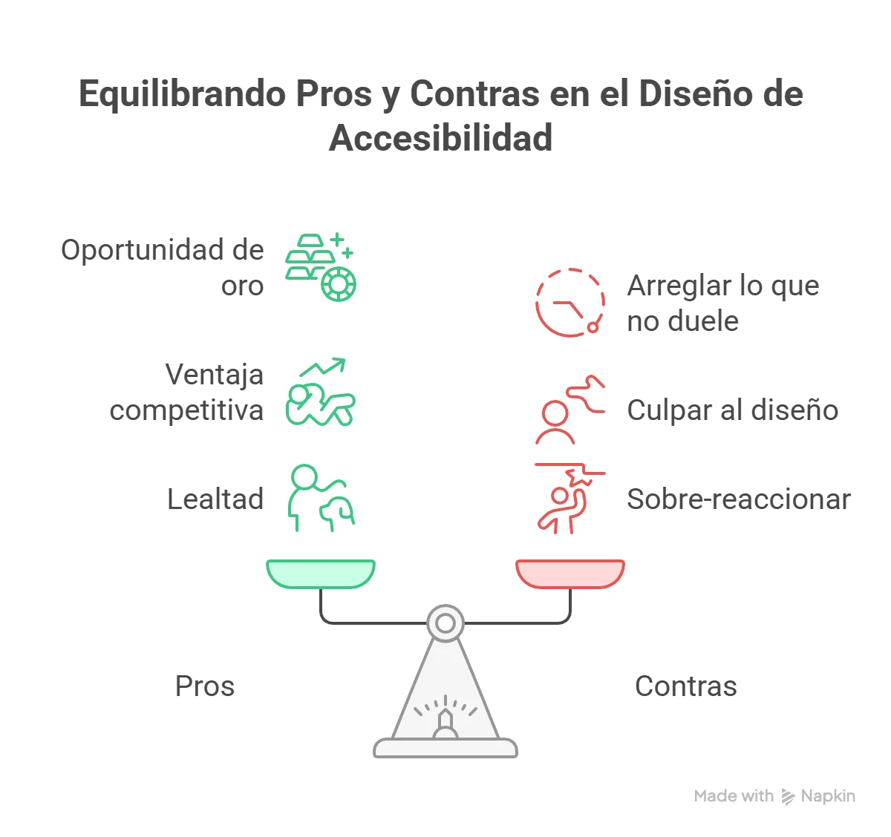

Consistencia visual, Recorrido del usuario y Puntos de dolor
Fue en el contexto del caos digital que comenzaron a gestarse los primeros principios de usabilidad. Diseñadores e investigadores comenzaron a preguntarse: ¿por qué unas aplicaciones se sienten naturales y otras no? ¿Por qué los usuarios abandonan ciertos procesos? De estas preguntas nacieron los conceptos que hoy estudiamos.
El término Consistencia Visual emergió como respuesta a la necesidad de predictibilidad. Si en una pantalla un botón rojo significa "eliminar", en todas debe significar lo mismo. Si el menú está en la parte superior en una sección, debe estarlo en todas. La consistencia se convirtió en la base del lenguaje visual digital.
Paralelamente, a medida que los sitios web crecían en complejidad, se hizo evidente que los usuarios no navegan al azar: siguen caminos. Nació entonces el concepto de Recorrido del Usuario, una herramienta para mapear cada paso que da una persona desde que entra a una plataforma hasta que completa su objetivo, prestando atención no solo a sus clics, sino también a sus emociones y pensamientos en cada etapa.
Y donde hay caminos, hay obstáculos. El estudio de estos recorridos reveló que los usuarios enfrentaban constantemente frustraciones: formularios eternos, botones que no se ven, mensajes de error incomprensibles. A estos obstáculos se les denominó Puntos de Dolor, y su identificación se volvió crucial para mejorar cualquier producto digital.
Hoy, estos tres pilares son la base del diseño de experiencias. No importa si hablamos de una aplicación bancaria, una red social o una tienda online: la Consistencia Visual genera confianza, el Recorrido del Usuario nos permite empatizar, y la eliminación de Puntos de Dolor define el éxito o fracaso de un producto.
- Afianzar los términos de Consistencia Visual, el Recorrido del Usuario y los Puntos de Dolor, diferenciándolos de otros elementos del diseño.
- Identificar patrones visuales repetitivos y fallos de flujo en aplicaciones reales mediante la observación crítica.
- Diagnosticar cómo un "Punto de Dolor" específico afecta negativamente la experiencia del usuario y proponer una mejora visual o funcional.
Consistencia visual
La consistencia visual es la aplicación uniforme de elementos gráficos logotipo, paleta de colores, tipografía e imágenes a través de todos los puntos de contacto de una marca (web, redes, impresos) para garantizar reconocimiento, confianza y profesionalismo. Esta estrategia crea una identidad coherente, eliminando la fricción del usuario y facilitando la numerabilidad de la marca.
Piensa en Netflix: identificas su página al instante: ese rojo característico, esa fuente personalizada, esas imágenes perfectamente organizadas. Es como ver el empaque de tu marca favorita en un estante lleno de gente: lo registras al instante.

Claves de la consistencia visual
Identidad de marca
Uso constante de colores, fuentes y estilos para que el público reconozca la marca de inmediato.
Diseño UI/UX
Mantenimiento de patrones, componentes (botones, formularios) y márgenes similares para una navegación intuitiva y sin errores.
Herramientas clave
- Guía de Estilo: Define las reglas de color, tipografía y diseño.
- Plantillas (Templates): Aseguran homogeneidad en redes sociales y materiales impresos.
- Sistema de Diseño: Herramientas reutilizables para mantener la coherencia en productos digitales complejos.
Beneficios
Construye confianza, aumenta la lealtad del cliente y refuerza el mensaje de marca.

Cinco elementos visuales que tu marca no puede ignorar
- 1. Color que comunica: Tu paleta de colores hace más que simplemente verse bien unos colores uniformes indican a los clientes dónde hacer clic, qué leer primero y cuándo han encontrado información importante.
- 2. Tipografía que guía: La elección de fuentes crea jerarquías claras que guían a los lectores a través del contenido. Los encabezados H1 deben captar la atención, mientras que el cuerpo del texto se mantiene nítido y legible. Cuando estos estilos tipográficos se mantienen consistentes, los usuarios saben instintivamente qué es lo más importante en cada página.
- 3. Elementos de diseño que conectan: Cada elemento visual, desde tu logotipo hasta tu icono más pequeño, debe sentirse como parte de la misma familia. Piensa en cómo los iconos de los productos de Apple comparten las mismas esquinas redondeadas y líneas limpias, o cómo la fotografía de Nike mantiene la misma energía dinámica en todas sus campañas. Esta consistencia en los elementos de diseño crea un reconocimiento instantáneo.
- 4. Diseños que fluyen: El diseño web debe seguir patrones de cuadrícula y reglas de espaciado consistentes. Cuando la página de inicio, las páginas de producto y el blog comparten la misma estructura, los clientes navegan intuitivamente. Saben dónde encontrar los menús, cómo se distribuirán las secciones de contenido y dónde aparecerán los botones importantes.
- 5. Jerarquía visual que funciona: Una jerarquía visual sólida implica organizar los elementos para que los clientes se centren de forma natural en lo más importante. Claro que quieres agrandar los elementos importantes, pero también quieres crear relaciones de tamaño, espaciado y contraste consistentes para crear rutas claras a través de tu contenido. Cuando esta jerarquía se mantiene constante en todas las páginas, los clientes nunca se sienten perdidos.

Ejemplo
Mala Consistencia (La App Loca):
Abres una app de comida. En la pantalla principal, el botón para pedir es un círculo rojo. En la siguiente pantalla, el mismo botón ahora es un cuadrado verde que dice "ORDENAR". En otra sección, para pedir tienes que deslizar una foto hacia arriba. Terminas pidiendo pizza por teléfono por frustración.
Buena Consistencia (La App Zen):
WhatsApp: El color verde, los iconos de cámara, el micrófono y el clip para adjuntar están SIEMPRE en el mismo lugar, con la misma forma, en todos los chats, en todos los teléfonos. Aprendiste a usar WhatsApp una vez y ya sabes usarlo para siempre.
Recorrido del usuario (user journey)
El Recorrido del Usuario es la ruta paso a paso que sigue un visitante desde su primera interacción hasta completar un objetivo (compra, registro) en un sitio, mapeando sus acciones, emociones y puntos de contacto. Mapear este proceso ayuda a optimizar la experiencia (UX), identificar fricciones y aumentar conversiones. No es solo una lista de pasos técnicos ("hace clic aquí, hace clic allá"). Es una película donde vemos:
Lo que hace (sus acciones)
Lo que piensa (sus dudas)
Lo que siente (sus emociones)

Componentes de un mapa del recorrido del usuario
Existen numerosas plantillas de mapas de recorrido del usuario disponibles en línea que puedes personalizar para adaptarlas a los objetivos y productos específicos de tu empresa. Si bien muchas tienen diferentes diseños y secciones adicionales, todas comparten cinco componentes principales. Estos son los elementos clave que un buen mapa de recorrido del usuario debe incluir para ser útil.

NN/g define estos 5 componentes principales de un mapa de recorrido del usuario:
Persona
Escenario + expectativas
Fases del viaje
Acciones, mentalidades y emociones
Propiedad interna y oportunidades

Tabla: Pros y Contras
| Pros (Lo que GANAMOS) | Contras (Lo que DEBEMOS CUIDAR) |
|---|---|
| Empatía real: Nos ponemos en los zapatos del usuario | Toma tiempo: Mapear bien un recorrido requiere investigación |
| Detectamos problemas: Vemos DÓNDE y POR QUÉ el usuario se atora | Podemos inventar: Si no preguntamos a usuarios reales, el mapa es ficción |
| Alinea al equipo: Todos (diseñador, programador, jefe) entienden lo mismo | Cambia constantemente: Lo que hoy funciona, mañana puede no servir |
| Prioriza: Sabemos qué arreglar PRIMERO |
Ejemplo
El Recorrido de un Chico que Quiere Invitar a Salir a Alguien (vía app de citas):
Descubre: "Me bajé Tinder porque mis amigos consiguieron citas".
Piensa: "A ver si funciona".
Siente: Esperanza
Entra: Abre la app, se registra con Google en 10 segundos.
Piensa: "Qué rápido, bien".
Siente: Aliviado
Explora: Ve perfiles, desliza, desliza, desliza...
Piensa: "Nadie me gusta... o sí, ella me gusta".
Siente: Aburrimiento → Emoción
Actúa: Hace MATCH con alguien. Le escribe: "Hola, ¿cómo estás?".
Piensa: "Ojalá me responda".
Siente: Nervios
Reflexiona: Le respondieron. Charlan. Quedan en verse.
Piensa: "Funcionó. La app es buena".
Siente: Feliz
Puntos de dolor (Pain points)
Los Puntos de Dolor en la web son problemas, frustraciones o dificultades específicas que los usuarios experimentan al interactuar con un sitio, producto o servicio digital. Incluyen procesos de compra complejos, mala usabilidad (UX), carga lenta, o información confusa, lo que genera fricción y abandono. Identificarlos permite mejorar la conversión y la satisfacción del cliente.
Puntos de dolor clave en la web:
- De UX/Usabilidad: Sitios no optimizados para móviles, menús complicados, botones que no funcionan, formularios excesivamente largos, o falta de información clara sobre el producto.
- De Rendimiento (Técnicos): Tiempos de carga lentos, enlaces rotos (error 404), o sitios que se caen frecuentemente.
- De Procesos/Conversión: Carritos de compra complejos, costos de envío ocultos hasta el final, falta de métodos de pago, o necesidad de registro obligatorio.
- De Contenido/Atención: Falta de información transparente, descripciones de producto pobres, dificultad para encontrar datos de contacto, o ausencia de un chat de ayuda.

Los 4 Tipos de dolor
| Tipo de Dolor | ¿Qué significa? | Frase típica del usuario |
|---|---|---|
| Financiero | Cuesta más de lo que debería | "¿¡¿$5 por enviar un mensaje?!? Mejor me voy" |
| Productividad | Pierdo tiempo haciendo algo simple | "Llevo 10 minutos y todavía no puedo registrarme" |
| Proceso | Los pasos son absurdos o infinitos | "Para darme de baja tengo que llamar por teléfono en horario de oficina... ESTOY TRABAJANDO" |
| Emocional | Me siento ignorado, estúpido o abandonado | "Tengo una duda y NO HAY chat, ni teléfono, ni ayuda... me siento solo" |

Tabla: Pros y contras
| Pros | Contras |
|---|---|
| Oportunidad de oro: Cada dolor resuelto es un usuario fiel | Arreglar lo que no duele: A veces "arreglamos" cosas que a nadie le importan |
| Ventaja competitiva: Si tu app no duele, ganas | Culpar al diseño: No todo lo arregla un botón bonito |
| Lealtad: El usuario que sufre y es rescatado, NUNCA se olvida | Sobre-reaccionar: No porque un usuario se queje hay que cambiar todo |

Ejemplo
El punto de dolor clásico: EL REGISTRO INFINITO
Imagina que quieres comprar una entrada para el concierto de tu banda favorita.
Encuentras la app, eliges la fecha, el sector...
Llegas al checkout y... ¡SORPRESA!
Te piden:
Nombre completo
Dos apellidos
Fecha de nacimiento
Género
Número de documento
Foto del documento
Dirección exacta
Código postal
Teléfono fijo (¿fijo? ¿quién tiene fijo?)
Teléfono móvil
Correo electrónico
Confirmar correo
Contraseña
Confirmar contraseña
Pregunta secreta
Respuesta secreta
Aceptar 15 términos y condiciones
Resultado: El concierto se agotó mientras llenabas el formulario. Perdiste la entrada. Odias la app. Odias a la banda. Odias tu vida.
Solución: Permite la compra como invitado. Pide solo lo esencial. El registro completo puede ser después.
✍️ Actividad #1
✍️ Actividad #2
Quiz sin preguntas configuradas
-
Consejos para mantener la consistencia visual en tus diseños de interfaz.
Ir al recurso -
El recorrido del cliente en un sitio web.
Ir al recurso -
Puntos de Dolor UX.
Ir al recurso
- Casado, E. (2024, Noviembre 25). MouseFlow. From MouseFlow: https://mouseflow.com/blog/the-website-customer-journey-stages-and-importance/#:~:text=enlace%20Enlace%20copiado-,%C2%BFQu%C3%A9%20es%20el%20recorrido%20del%20cliente%20en%20un%20sitio%20web,la%20experiencia%20en%20cada%20etapa
- Gibbons, S. (2018, Diciembre 9). NM/GROUP. From NM/GROUP: https://www.nngroup.com/articles/journey-mapping-101/
- Pinto, S. (2025, Febrero 28). Imaginacolombia. From Imaginacolombia: https://www.imaginacolombia.com/articulos/viaje-del-usuario#:~:text=2.,testimonios%20y%20ejemplos%20de%20trabajos
- Lanier, S. (2025, Abril 8). siteimprove.com. From siteimprove.com: https://www.siteimprove.com/blog/visual-consistency-meaning/#:~:text=%C2%BFQu%C3%A9%20es%20la%20consistencia%20visual,llev%C3%B3%20a%20su%20sitio%20web
- Posicionamiento Web Salamanca. (2021, Mayo 22). posicionamiento-web-salamanca.com. From posicionamiento-web-salamanca.com: https://www.posicionamiento-web-salamanca.com/blog/marketing-2-0/que-son-los-puntos-de-dolor-y-como-usarlos-en-el-marketing/#:~:text=Los%20puntos%20de%20dolor%20o,al%20cliente%20en%20tu%20ecommerce
- PWS. (2021, Mayo 22). PWS. From PWS: https://www.posicionamiento-web-salamanca.com/blog/marketing-2-0/que-son-los-puntos-de-dolor-y-como-usarlos-en-el-marketing/#:~:text=Los%20puntos%20de%20dolor%20o,al%20cliente%20en%20tu%20ecommerce
- Strba, M. (2024, octubre 10). UXtweak. From UXtweak: https://www.uxtweak.com/user-journey-map/#:~:text=posteriores%20al%20viaje.-,Acciones%2C%20mentalidades%20y%20emociones,por%20investigaciones%20previas%20de%20usuarios%20